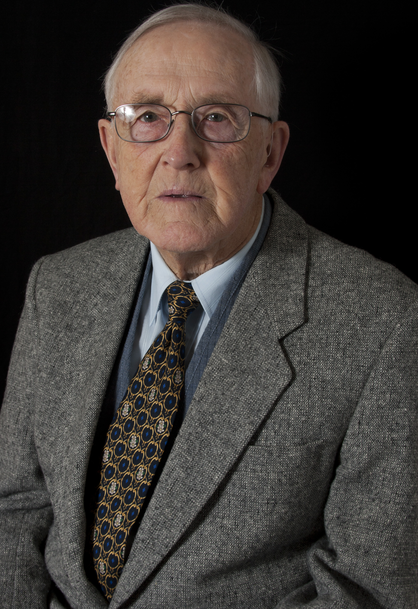

For A Better Democracy



New eBOOK - $5.99
Click here to open account, view, buy.
Feedback
We cannot entrust our future to party politicians, whose allegiance to the people comes second to party and other minority interests, which control parliament through the open-voting system in parliament
Only ballots in our parliaments, for the election of ministers, and for decisions on all debated issues, can bring about the political decisiveness, the accountability, the independent representation and the participation of the people, in a genuine democracy which alone can enable an effective and prompt response to the problems of our world.
Global warming, resource depletion, population explosion, restless religions, all threaten us with much greater political pressures in the future, we will need all of the character, wit and wisdom of all of us to bring about the best answers - together - as a united people.
Objective:
The adoption (by referendum) of the secret ballot in our parliaments, to freely elect each Minister and determine the outcome of each debate.
By disconnecting our representatives from party power in parliament and reconnecting them to their constituents in local public forums, this reform has the power to 'change the face of politics', by referendum, for ever.
Only ballots in our parliaments, for the election of ministers, and for decisions on all debated issues, can bring about the political decisiveness, the accountability, the independent representation and the participation of the people, in a genuine democracy which alone can enable an effective and prompt response to the problems of our world.
Global warming, resource depletion, population explosion, restless religions, all threaten us with much greater political pressures in the future, we will need all of the character, wit and wisdom of all of us to bring about the best answers - together - as a united people.
The adoption (by referendum) of the secret ballot in our parliaments, to freely elect each Minister and determine the outcome of each debate.
By disconnecting our representatives from party power in parliament and reconnecting them to their constituents in local public forums, this reform has the power to 'change the face of politics', by referendum, for ever.